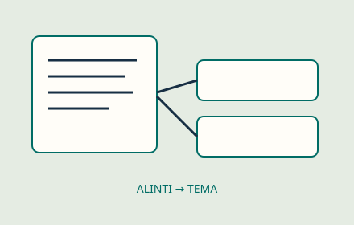

SOSYOLOJİ × DİJİTAL OKURYAZARLIK
Toplumu anlamak,
yeni araçlar keşfetmek.
Ben Adnan Gürkan İlkehan. Bahçeşehir Üniversitesi Sosyoloji öğrencisiyim. Bu defterde sosyoloji ile kodlamanın kesiştiği çalışmalarımı bir araya getiriyorum.
Projelerimi incele HakkımdaÖNE ÇIKAN ÇALIŞMA · PYTHON
Nitel Görüşme
Kodlama Defteri
Alıntılardan temalara: görüşme kayıtlarını düzenleyen, tema sayılarını özetleyen bir komut satırı uygulaması.
Projenin GitHub deposunu incele ↗
ÇALIŞMA YAKLAŞIMI
Sorulardan başlayan bir öğrenme süreci.
Bu portfolyo tamamlanmış çalışmaları ve henüz geliştirme aşamasındaki fikirleri açıkça ayırır. Kullanılan araçlar, amaçları ve sınırlarıyla birlikte sunulur.